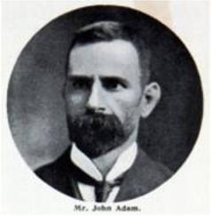

Past Masters
|
David Jones 2023-24 |

Stewart McManus 2022-23 |
David Wheatley 2019-22 |
Ian Haldane 2018-19 |
Thomas Woods 2017-18 |
|
Edward Woods 2016-17 |
Ian Haldane 2015-16 |
Charles Hendry 2014-15 |
Alarn Murphy 2012-14 |
Richard Milliken 2011-12 |
|
David Kelly 2009-11 |
Frank Richmond 2007-09 |
Jim Clifford 2005-07 |
Robert Barr 2004-05 |
Charles Archibald 2003-04 |
|

Our first Right Worshipful Master John Adam 1914 |
2017-2018 T Woods 2016-2017 E Woods 2015-2016 I Haldane 2014-2015 C Hendry 2013-2014 A Murphy 2012-2013 A Murphy 2011-2012 R Milliken 2010-2011 D Kelly 2009-2010 F Richmond 2008-2009 F Richmond 2007-2008 J Clifford 2006-2007 J Clifford 2005-2006 R Barr 2004-2005 C Archibald 2003-2004 S Laurie 2002-2003 J King SNR 2001-2002 J King JNR 2000-2001 D Kelly 1999-2000 A Murphy 1998-1999 D Bambridge 1997-1998 R Carss 1996-1997 G McLean 1995-1996 F Carss 1994-1995 J Smith 1993-1994 D Turner 1992-1993 J Low 1991-1992 A Murphy 1990-1991 D Bambridge 1989-1990 T Corbett 1988-1989 C Archibald 1987-1988 J McCann 1986-1987 T Young 1985-1986 E Fitzsimmons 1984-1985 J McNamara 1983-1984 W Cassidy 1982-1983 W Cassidy 1981-1982 M Rowson 1980-1981 I Monteague 1979-1980 R Dalrymple 1978-1979 A McManus 1977-1978 D Park 1976-1977 G Reid 1975-1976 A Chalmers 1974-1975 S Crosbie 1973-1974 L Connell 1972-1973 R Ramsay 1971-1972 R McLachlan 1970-1971 N Anderson 1969-1970 W White 1968-1969 R Dalrymple 1967-1968 W Sommerville 1966-1967 W McCaffery |
1965-1966 J Kerr 1964-1965 R McIntosh 1963-1964 J McCann 1962-1963 A Beattie 1961-1962 J McIntosh 1960-1961 W Wishart 1959-1960 J McDermid 1958-1959 J McCafferty 1957-1958 R Ingram 1956-1957 E Rodger 1955-1956 J McCann 1954-1955 R McIntosh 1953-1954 W Hannah 1952-1953 J Campbell 1951-1952 J Lawson 1950-1951 P Park 1949-1950 B Milne 1948-1949 M McLean 1947-1948 T McWhinnie 1946-1947 W Young 1945-1946 A Marshall 1944-1945 J Maxwell 1943-1944 T Wilkie 1942-1943 D Dunwoodie 1941-1942 W Berry 1940-1941 J Hastings 1939-1940 J Stein 1938-1939 B Berry 1937-1938 A Forbes 1936-1937 W Herd 1935-1936 J Christie 1934-1935 J Richards 1933-1934 J Dunlop 1932-1933 W Watson 1931-1932 J Douglas 1930-1931 J Grassom 1929-1930 J Graham JNR 1928-1929 W Jackson 1927-1928 J Campbell 1926-1927 W Geddes 1925-1926 F Brooks 1924-1925 G Henderson 1923-1924 C Wright 1922-1923 Rev J Barrowman 1921-1922 D Ritchie 1920-1921 G Swan 1919-1920 E J Richards 1918-1919 D Maxwell 1917-1918 R Swails 1916-1917 W Thorley 1915-1916 J Adam 1914-1915 J Adam |